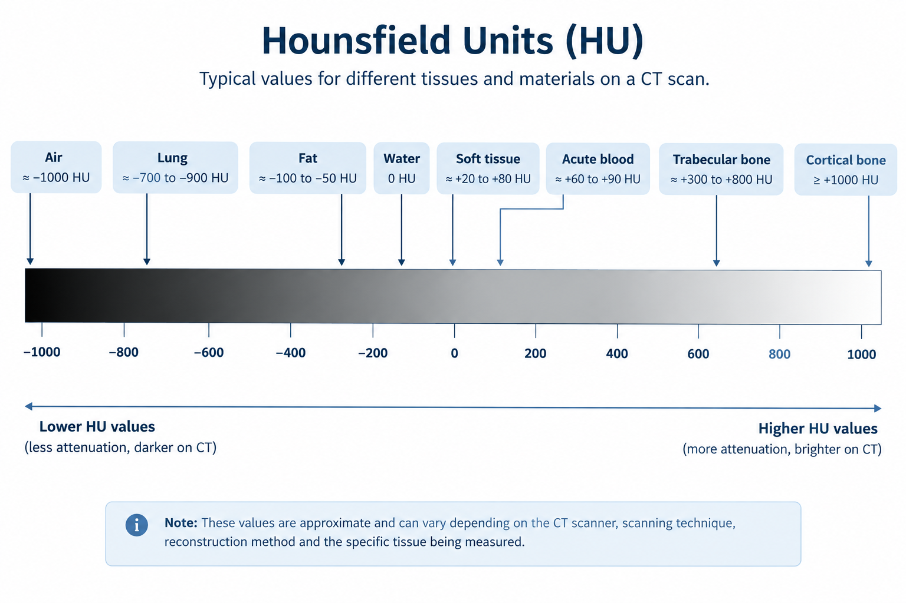

What Are Hounsfield Units?
When a CT scan is reconstructed, the tissues inside the body are represented by different shades of gray. But CT images are not based only on how light or dark a tissue looks.
Each part of the image is assigned a numerical value based on how much it attenuates X-rays. These values are called Hounsfield Units (HU).
In simple words, HU are numbers that help describe the X-ray attenuation of different tissues on a CT image.
Why Are HU Used?
Different tissues attenuate X-rays by different amounts.
For example, air allows most X-rays to pass through, while bone attenuates much more. Because of these differences, the tissues receive different CT numbers.
The HU scale gives these differences a standard numerical reference.
The scale is based on water, which is assigned a value of approximately 0 HU.

| Material / Tissue | Approximate HU |
|---|---|
| Air | −1000 |
| Fat | −100 to −50 |
| Water | 0 |
| Soft tissue | +20 to +80 |
| Bone | +300 to +1000 or more |
These values are approximate rather than fixed numbers. The measured HU of a tissue can vary depending on factors such as the CT scanner, scanning technique, reconstruction method, and the particular tissue being measured.
How Does CT Produce These Numbers?
The CT scanner measures how much the X-ray beam is attenuated as it passes through the body.
The reconstruction process uses measurements collected from many different directions to estimate the attenuation within the scanned region.
The resulting values are converted into CT numbers on the Hounsfield scale.
The HU value is then displayed as part of the CT image, where different ranges of values appear as different shades of gray.
Why Does Water Have a Value of 0 HU?
Water is used as the reference point for the Hounsfield scale.
By convention:
Materials that attenuate X-rays less than water generally have negative values, while materials that attenuate X-rays more strongly generally have positive values.
That is why:
- Air has a very low, negative HU value.
- Fat has a negative HU value.
- Water is around 0 HU.
- Most soft tissues have positive values.
- Bone has much higher positive values.
This gives us a way to relate the numbers on a CT image to the physical properties of the tissues being examined.
HU and the Appearance of a CT Image
HU values are closely related to the gray-scale appearance of a CT image.
In general:
Lower HU → darker
Higher HU → brighter
For example, air inside the lungs has a very low attenuation value, so it appears very dark on a CT image.
Bone has a much higher attenuation value, so it appears bright.
Soft tissues fall between these extremes and appear in different shades of gray.
However, the way these values appear on the screen also depends on the window width and window level selected for viewing the CT image.
This is why the same tissue can look different when different CT windows are used.
Why Are HU Important in Clinical CT?
HU values help radiologists and other healthcare professionals distinguish between tissues and characterize structures on CT.
They can also be useful when assessing certain findings.
For example, measuring the attenuation of a structure can provide information that is difficult to determine from visual appearance alone.
HU can be used when evaluating things such as:
- Fat-containing lesions
- Fluid
- Calcification
- Bone
- Blood
- Certain types of stones
However, HU values should not be interpreted in isolation. The patient's clinical information, the appearance of the structure, the CT technique, and the appropriate imaging window all matter when interpreting a finding.
A Simple Way to Remember HU
Think of HU as a number assigned to the X-ray attenuation of a material or tissue.
The basic reference points are:
Air → around −1000 HU
Water → 0 HU
Bone → high positive HU
So when you see a CT image, the gray shades are not random. They are related to the attenuation values calculated during image reconstruction.
Key Takeaway
Hounsfield Units (HU) are numerical values used in CT to represent X-ray attenuation.
Water is approximately 0 HU, air is around −1000 HU, and materials such as bone have much higher positive values.
These numbers help describe the tissues seen on CT images and can provide useful information when interpreting different structures.
In one line:
HU = a numerical way of describing X-ray attenuation on a CT image.
Sources & Further Reading
-
Radiopaedia
— Hounsfield unit
Overview of Hounsfield Units and CT attenuation values. -
NCBI Bookshelf
— Computed Tomography
CT image formation, attenuation and CT numbers. -
National Institute of Biomedical Imaging and Bioengineering (NIBIB)
— Computed Tomography (CT)
Basic principles of CT imaging and image reconstruction.